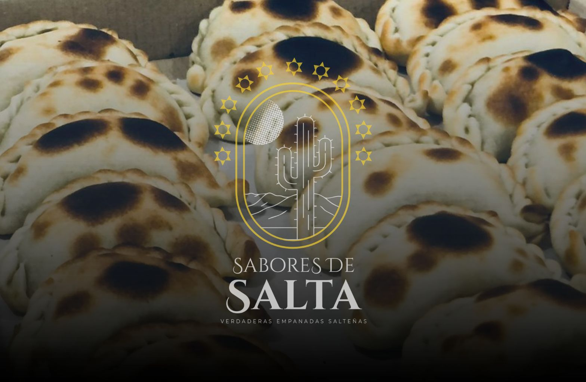
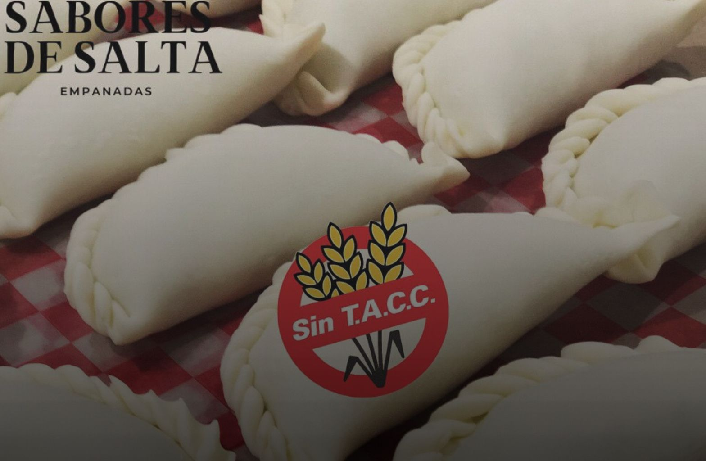
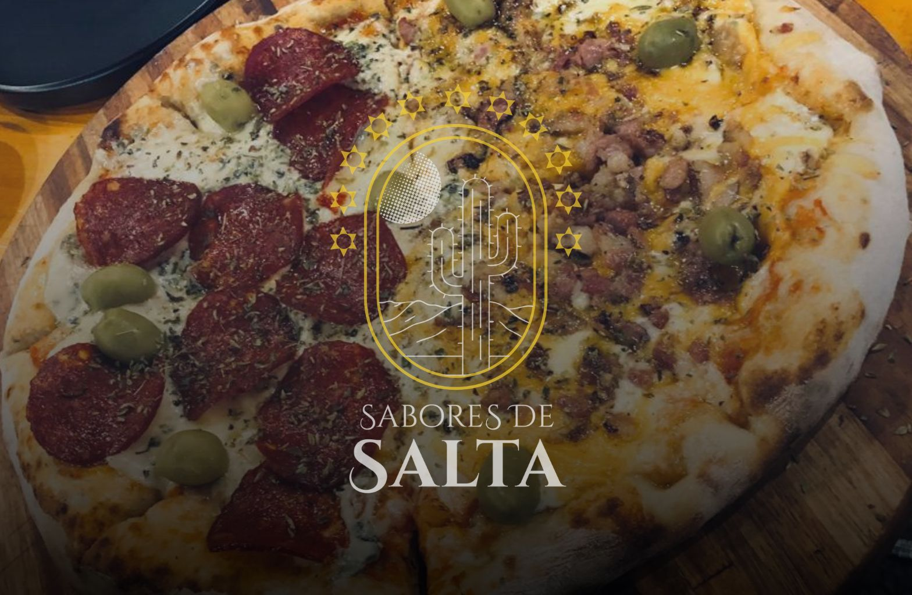

Nuestro Menú

Hechas en horno de barro, con carne cortada a cuchillo, papa, cebolla, huevo rallado, verdeo y una selección de condimentos frescos.
Hechas en horno de barro, pollo cortado a cuchillo, papa, cebolla, huevo rallado, verdeo y una selección de condimentos frescos.
Hechas en horno de barro, masa casera, Jamón y queso sin condimentos agregados.
Hechas en horno de barro, masa casera, Queso y huevo sin condimentos agregados ideales para niños
Hechas en horno de barro, cebolla, queso, papa y una selección de condimentos frescos.
Hechas en horno de barro, choclo en grano procesado, queso y una selección de condimentos frescos.
Hechas en horno de barro, masa casera, tomate, queso y albahaca.
Hechas en horno de barro, Carne salada y deshidratada artesanalmente, papa, cebolla, huevo rallado, verdeo y una selección de condimentos frescos.
Hechas en horno de barro, masa casera y una selección de quesos de primera calidad.
Hechas en horno de barro, con carne picada seleccionada, adobada con limón, morrón rojo, cebolla y una cuidada selección de condimentos frescos.
Elaboradas en área separada, aptas para celíacos.


Pizza al horno de barro con salsa de tomate y mozzarella de 1ra calidad.
NAPOLITANA Pizza al horno de barro con salsa de tomate, mozzarella, tomates frescos en rodajas, perejil y ajo al vinagre.
Pizza al horno de barro con salsa de tomate, mozzarella, morrón rojo al rescoldo, palmitos, salsa golf y jamón crudo.
Pizza al horno de barro con humita, parmesano, mozzarella y albahaca.
Pizza al horno de barro con salsa de tomate, mozzarella y pepperoni estilo americano.
Pizza al horno de barro con salsa de tomate, mozzarella, ananá en rodajas caramelizada con azúcar negra.
Pizza al horno de barro con salsa de tomate, mozzarella, parmesano, queso azul y cheddar.
Pizza al horno de barro con salsa de tomate, mozzarella y cebolla caramelizada.
Pizza al horno de barro con salsa de tomate, mozzarella, rúcula, jamón crudo y queso parmesano rallado.
Pizza al horno de barro sin salsa, con mantequilla de ajo, parmesano y mozzarella.
Pizza al horno de barro con salsa de tomate, mozzarella, panceta y cheddar.
Pizza al horno de barro con salsa de tomate, mozzarella y calabresa.
Pizza al horno de barro con salsa de tomate, mozzarella y choclo.
Pizza al horno de barro con salsa criolla, mozzarella, panceta y morrón al rescoldo.
Pizza al horno de barro con salsa de tomate, mozzarella, jamón cocido, morrón rojo al rescoldo y huevo duro.
Pizza al horno de barro con salsa de tomate, mozzarella, jamón cocido y morrón rojo al rescoldo.
Borde relleno: $3.000
Podés combinar mitades o pedir media pizza.